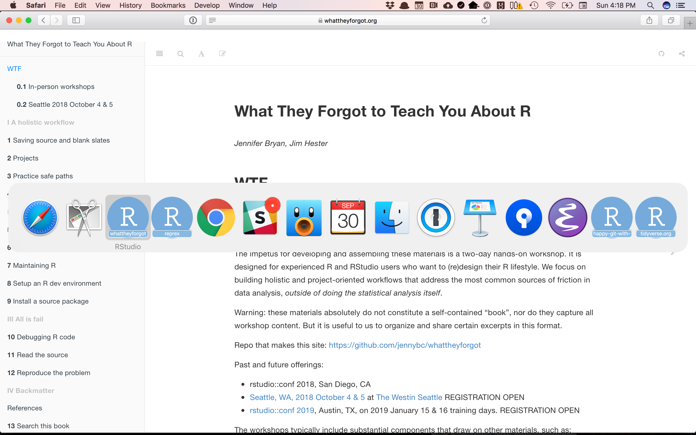
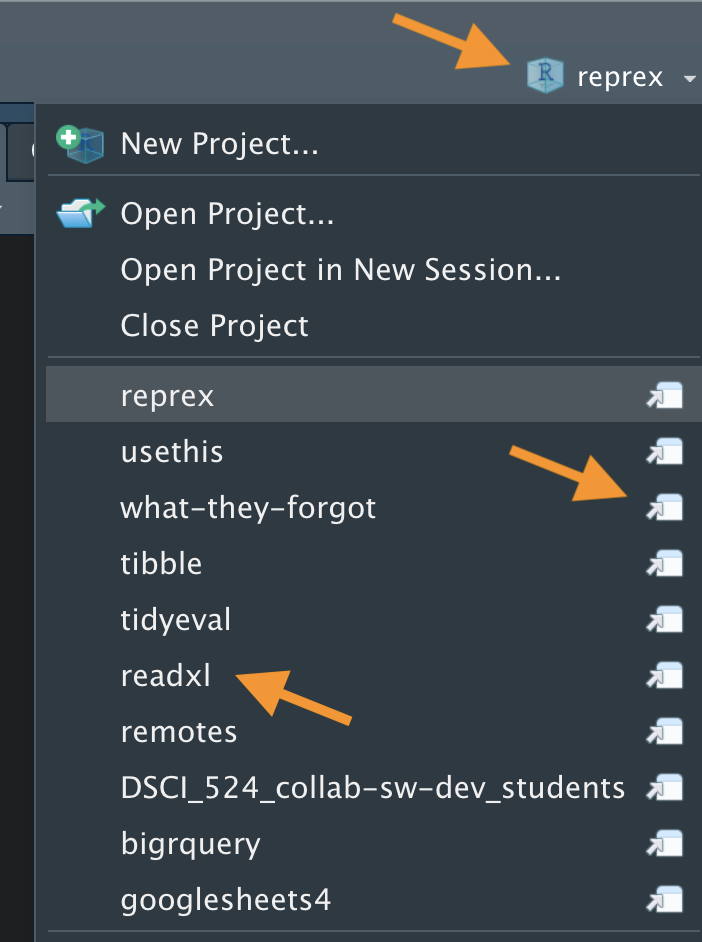
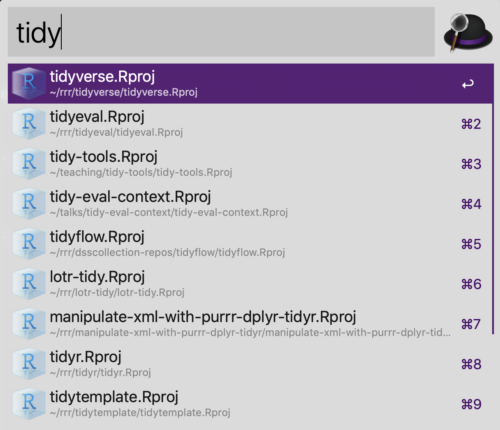

library(ggplot2)
setwd("/Users/jenny/cuddly_broccoli/verbose_funicular/foofy/data")
df <- read.delim("raw_foofy_data.csv")
p <- ggplot(df, aes(x, y)) + geom_point()
ggsave("../figs/foofy_scatterplot.png")3 Project-oriented workflow
In Section 2.5, we discouraged the habit of starting R scripts with rm(list = ls()), because it doesn’t actually achieve the intended goal: to reset things. Restarting R is a better way to power-cycle.
But what if you want to shift focus from project A to project B? Restarting R, alone, is not enough. It doesn’t change R’s working directory, which is needed if projects A and B live in different directories, which they should (see Section 3.3)). Also, what if you want to have project A and B available for work at the same time?
My strong recommendation is to use a development tool with first-class support for projects. But first …
3.1 We need to talk about setwd("path/that/only/works/on/my/machine")
A common response to the working directory problem is to set the working directory at the beginning of each script via setwd(). At the start of STAT 545, we see a lot of student code that looks like this:
The chance of the setwd() command having the desired effect – making the file paths work – for anyone besides its author is 0%. It’s also unlikely to work for the author one or two years or computers from now. To recreate and perhaps extend this plot, the lucky recipient will need to hand edit one or more paths to reflect where the project has landed on their machine.
Hard-wired, absolute paths, especially when sprinkled throughout the code, make a project brittle. Such code does not travel well across time or space.
If, after reading this article, you still decide to use setwd() in your scripts, you should at least be very disciplined about it:
Only use
setwd()at the very start of a file, i.e. in an obvious and predictable place. If someone has to hand-edit all of these, make it easy for them.Always set working directory to the same thing, namely to the top-level of the project (not a subdirectory). Always build subsequent paths relative to that. Here’s how that looks in the previous example:
setwd("/Users/jenny/cuddly_broccoli/verbose_funicular/foofy") library(ggplot2) df <- read.delim("data/raw_foofy_data.csv") p <- ggplot(df, aes(x, y)) + geom_point() ggsave("figs/foofy_scatterplot.png")
The convention about leaving working directory at the top-level of a project is tightly connected to topics in Chapter 4.
3.1.1 If you like setwd(), then carry on
If you use setwd("path/that/only/works/on/my/machine") and it does not cause you or your collaborators grief, then I am happy for you. Carry on. This was my practice as well for many years.
But eventually I admitted that this did cause me grief whenever I moved my files, collaborated on an analysis with a colleague, or got a new computer. Then, as the instructor of STAT545, I started to run other people’s code en masse. Up to 80 students submitted multiple .R and .Rmd files each week, riddled with setwd() calls that required artisanal hand editing by me. This was the straw that broke the camel’s back and made me determined to clearly articulate this problem and some solutions. You can design this particular aggravation out of your life.
3.2 Dilemma and a solution
Problem statement:
- We want to work on project A with R’s working directory set to
path/to/projectAand on project B with R’s working directory set topath/to/projectB. - But we also want to keep code like
setwd("path/to/projectA")out of our.Rscripts.
The lowest-tech solution is to simply set working directory yourself, interactively, at the same time as you restart R, when you switch from project A to project B. Execute setwd("path/to/projectA"), but don’t bake it into your scripts. This works! But it’s aggravating enough that most people go back to using setwd() anyway and/or are reluctant to cycle rapidly between projects.
I strongly recommend using an IDE that supports a project-based workflow. This eliminates the tension between your development convenience and the portability of the code.
3.3 Organize work into projects (colloquial definition)
Here’s what I mean by “work in a project”:
- File system discipline: put all the files related to a single project in a designated folder.
- This applies to data, code, figures, notes, etc.
- Depending on project complexity, you might enforce further organization into subfolders.
- Other common file practices are detailed in API for an analysis and How to name files.
- Working directory intentionality: when working on project A, make sure working directory is set to project A’s folder.
- Ideally, this is achieved via the development workflow and tooling, not by baking absolute paths into the code.
- File path discipline: all paths are relative and, by default, relative to the project’s folder.
These habits are synergistic: you’ll get the biggest payoff if you practice all of them together.
These habits guarantee that the project can be moved around on your computer or onto other computers and will still “just work”. I argue that this is the only practical convention that creates reliable, polite behavior across different computers or users and over time. This convention is neither new, nor unique to R.
It’s like agreeing that we will all drive on the left or the right. A hallmark of civilization is following conventions that constrain your behavior a little, in the name of public safety.
3.4 IDE support for projects
Projects are a common and very attractive feature of many IDEs (Section 2.2)). Again, the practice of organizing work in projects is not prevalent among long-time coders because they use an IDE. It’s the other way around: one of the attractions of an IDE is that it makes it easier to exploit development practices that have proven to be useful across many languages and domains.
I would say an IDE or workflow supports project-oriented work in R if there’s a way to do these things:
- Launch the IDE in project A:
- Starts R.
- Sets working directory to the project’s folder.
- Switch a running instance of the IDE from project A to project B:
- Restarts R.
- Sets working directory to the project’s folder.
- Optional but nice: restores previously open files, i.e. pick up where you left off.
- Have project A and project B open for simultaneous work:
- Each project gets its own R process, with working directory set appropriately.
- Optional but nice: multiple projects feel like multiple instances of the IDE and you can use a conventional method to switch between them, e.g. Command+Tab (Mac OS) or Alt+Tab (Windows).
3.5 RStudio Projects
The RStudio IDE has a notion of a (capital “P”) Project, which is a very effective implementation of the (small “p”) projects described above.
You can designate a new or existing folder as a Project. All this means is that RStudio leaves a file, e.g., foofy.Rproj, in the folder, which is used to store settings specific to that project. Use File > New Project … to get started.
Double-click on a .Rproj file to open a fresh instance of RStudio, with the working directory and file browser pointed at the project folder.
Once RStudio is running, you can open an existing Project, switch to another Project, launch a second instance of RStudio in a new or existing Project, and much more, via various menus and keyboard shortcuts (more below).
Here’s a screenshot of the Mac OS app switcher invoked via Command+Tab, showing multiple simultaneous instances of RStudio.

This allows rapid context switching across several projects, such as an R package, teaching material, and a data analysis. There is no danger of crosstalk between the projects: each has its own R process, global workspace, and working directory.
3.5.1 Tricks for opening Projects
Once you decide “I want to do some work in Project K”, there are various ways to accelerate the startup process. I’ll review a few going from general and low-tech to more specific.
Have a dedicated folder for your Projects. I keep the vast majority of my R work in RStudio Projects in the folder ~/rrr/. What I call this folder and where I keep it is not important. The main point is if you have One Main Place for Projects, then you can go there in Finder or File Explorer and drill down to the .Rproj file needed to launch any specific project. You can make the One Main Place more accessible to yourself by putting it in the Finder’s Sidebar (macOS) or in the Navigation Pane (Windows).
RStudio knows about recently used Projects. Once you are in RStudio, there are several ways to access other Projects you’ve recently worked in. In the upper right corner is a drop-down menu with various Project- and session-related goodies in it.

Use the “arrow and paper” icon to open a Project in a separate RStudio instance, while also leaving the Project you’re launching it from open. Click on a Project’s name to switch the current RStudio instance from one Project to another. The File menu also offers ways to switch project or open new, additional instances.
Find and Launch Projects with Alfred. This is a highly specific app recommendation that only works on macOS, but I’m sure other tools have a similar capability on macOS and Windows. I use Alfred, which is a macOS application launcher and general productivity booster, based on a recommendation from Hadley Wickham.
You will set an Alfred hotkey (I use Option + Space), similar to macOS Spotlight. The hotkey calls up a search window, where you can summon apps or files. I’ve configured Alfred to search preferentially for .Rproj files here, making it extremely easy to find and launch RStudio Projects. Here’s what happens when I type “tidy”:

You can achieve this by “registering” the .Rproj file type with Alfred. Go to Alfred’s Preferences > Features > Default Results > Advanced…. Drag any .Rproj file onto this space and then close.
3.6 Other ways to work with projects
Aspirational placeholder.
Will hopefully sketch project-friendly workflows that are not RStudio, e.g. Emacs + ESS. They do exist but I am not expert in them and an open to input from those who are. Links to well-developed guides would be best as I don’t want to ingest anything I can’t maintain.
3.6.1 Project-specific shortcuts on Windows
still rough
After installing R, you will have a shortcut to Rgui.exe on your desktop and/or somewhere on the Start menu file tree, and perhaps also in the Quick Launch part of the taskbar (Vista and earlier).
Create a copy of this shortcut for each project. Right-click the new shortcut, select Properties..., and change the ‘Start in’ field to the folder where the project lives.
Launch R in a project by double-clicking its suitably-prepared shortcut.
Source:
- R for Windows FAQ question 2.10 How can I keep workspaces for different projects in different directories?
3.7 Links to other resources
This page from STAT 545 covers some of the same ground, but aimed at someone quite new to R.
The post Project-oriented workflow from the tidyverse blog is an earlier effort to explain why rm(list = ls()) and setwd() indicate a sub-optimal workflow.
- That lead to a lively thread on community.rstudio.com where lots of useRs share their experience and tricks.